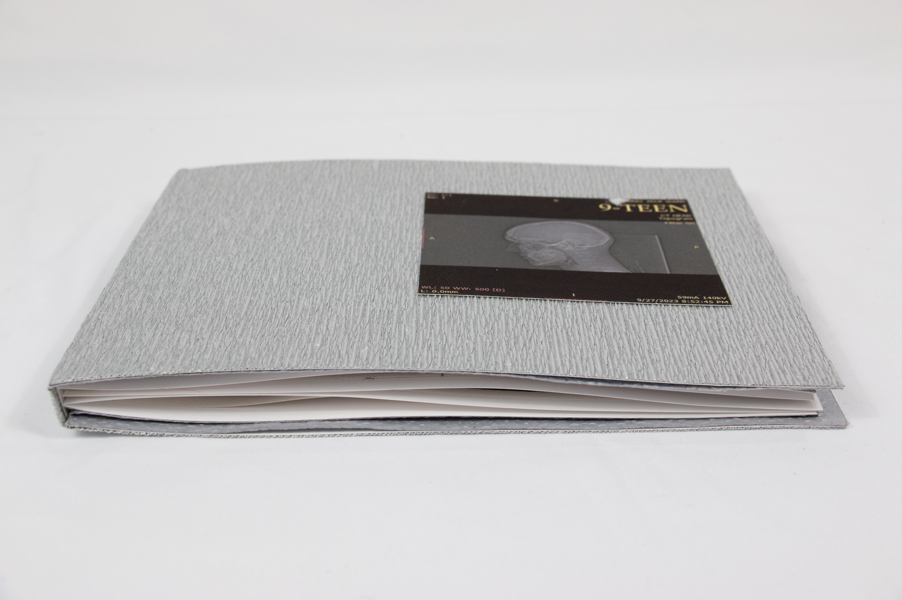
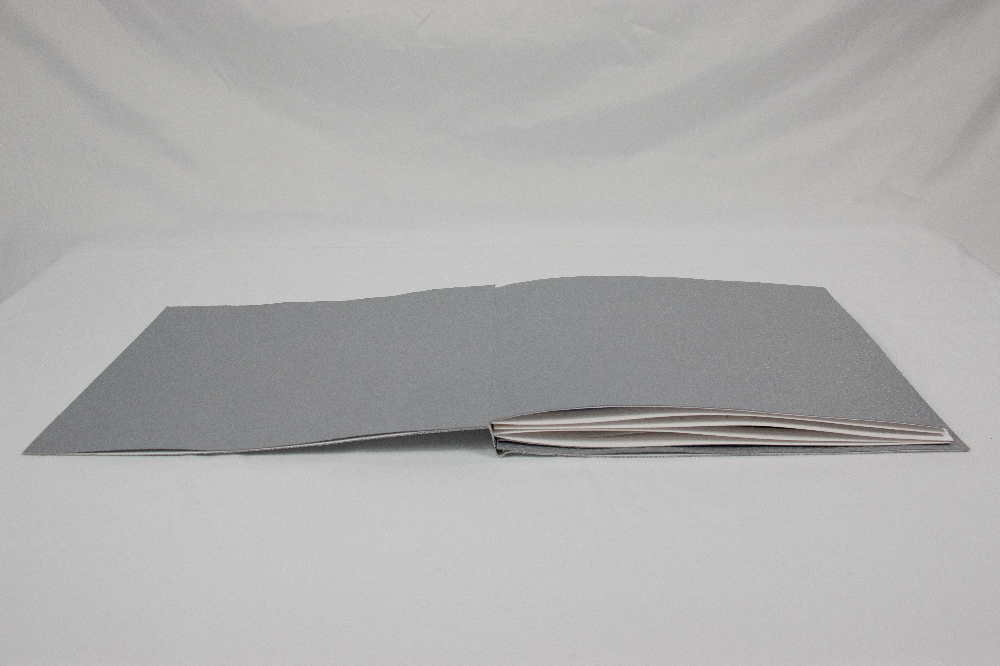
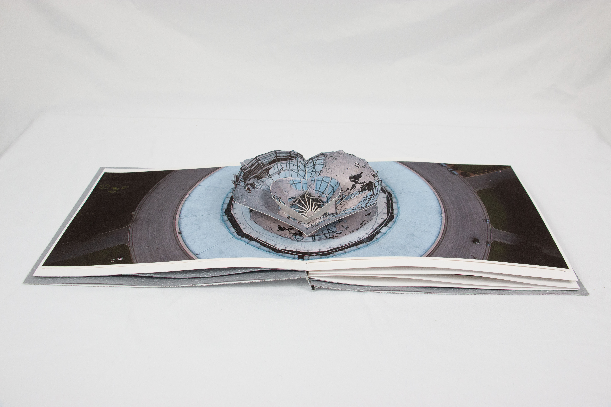
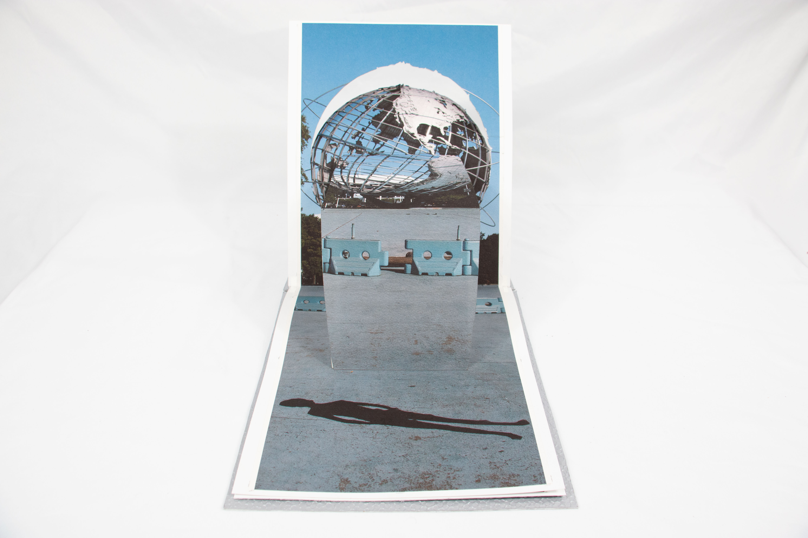
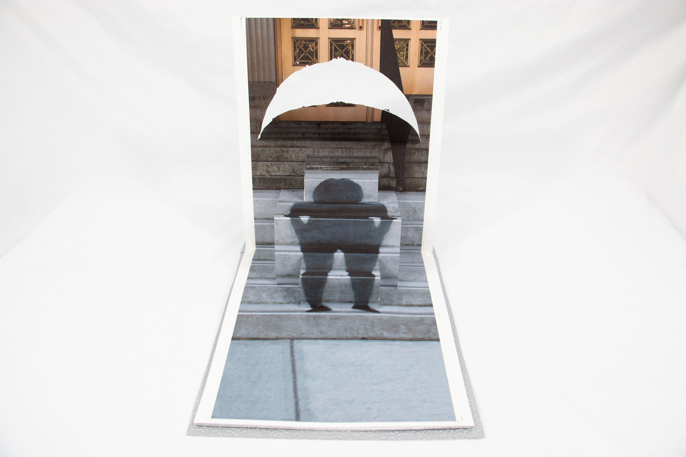
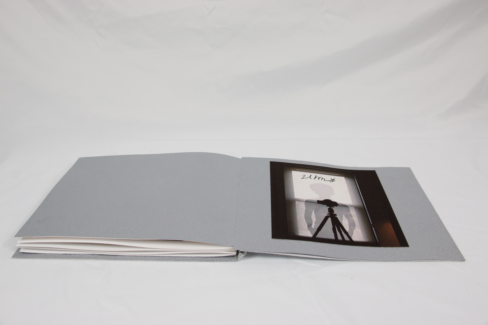
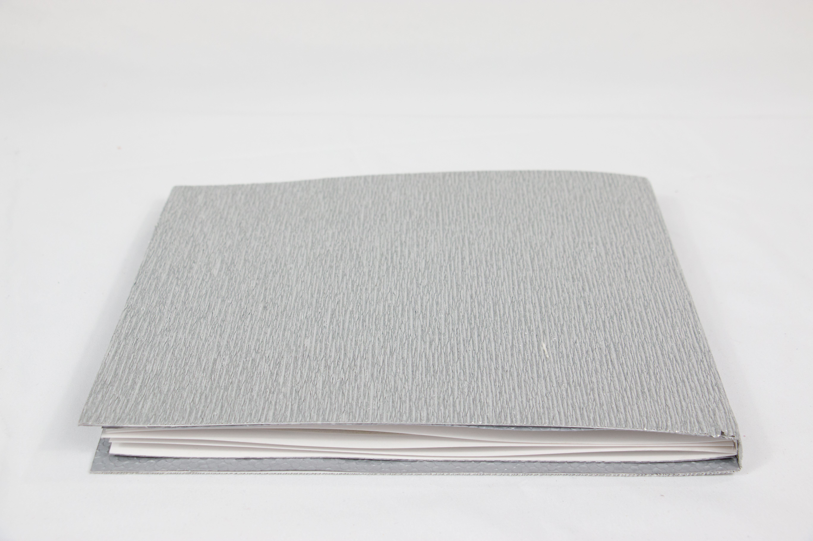

Jack Murray
9-Teen
My first forte into book making
9-teen is a popup booked based on my current experience being 19. It starts by introducing the world we live in, elevated from the ground.
As a 19 year old, I find myself feeling like a shadow, stuck outside of the world with no way to reach it
But as time goes on, I am finding a way to break into the world that seemed impossible to reach
 At the end of 19, you find yourself 20 and finally inside the world. While you may still feel like a shadow, you know that will change too.
A book by JMKRY
Here's to 20
